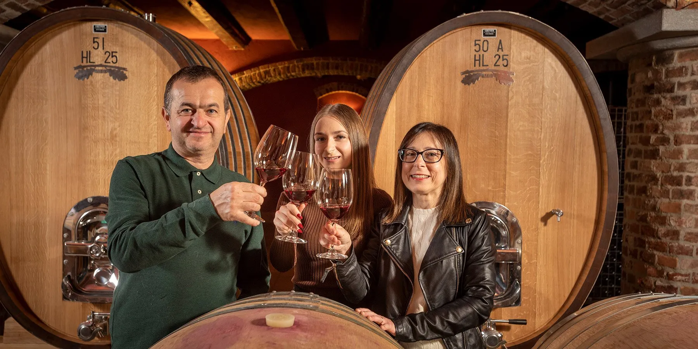

Quarta geração
Hoje: Alessandra, Marco e Elisa.
A neta de Gianfranco assumiu a gestão em 2014 ao lado do marido Marco. Em 2023, a filha dos dois, Elisa, entrou pra tocar a próxima geração da família.